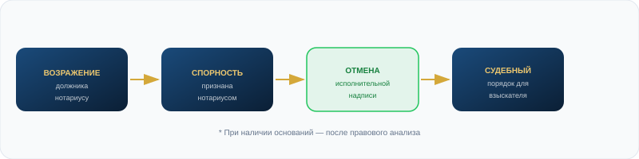

Как отменяется исполнительная надпись нотариуса
Исполнительная надпись — внесудебный инструмент взыскания. Он применяется только по бесспорным требованиям. Если есть основания для возражения — надпись может быть отменена, а арест снят.

Что такое исполнительная надпись
Исполнительная надпись нотариуса — это внесудебный исполнительный документ, совершаемый нотариусом по требованиям, прямо предусмотренным законодательством Казахстана. На её основании частный судебный исполнитель (ЧСИ) возбуждает исполнительное производство и может наложить арест на счета, карты, имущество или авто.
Исполнительная надпись применяется только по бесспорным требованиям. Это прямо предусмотрено Законом РК «О нотариате» (ст. 92-1, 92-2). Если требование спорное — нотариус не вправе её совершать.
Когда должник вправе возразить
Согласно Правилам совершения нотариальных действий, должник вправе подать письменное возражение нотариусу в течение 10 рабочих дней с момента получения уведомления о совершённой надписи.
Основания для возражения могут включать:
- Несогласие с суммой или расчётом задолженности
- Несогласие с начисленными процентами, пеней или комиссиями
- Часть долга оплачена, но не учтена взыскателем
- Должник не был надлежаще уведомлён
- Требование не входит в перечень для исполнительной надписи
- Договор расторгнут или признан недействительным
- Есть встречные требования к взыскателю
Само по себе несогласие не гарантирует автоматическую отмену. Наличие возражений требует правового анализа документов, расчётов и оснований.
Что происходит после подачи возражения
Возражение подаётся нотариусу
В течение 10 рабочих дней с момента уведомления. Форма — письменная.
Нотариус рассматривает возражение
Не позднее 3 рабочих дней нотариус выносит постановление. При наличии оснований — об отмене надписи.
Постановление об отмене направляется ЧСИ
ЧСИ должен принять меры к прекращению исполнительных действий по данной надписи.
Контроль снятия арестов
Важно проверить, нет ли других ИП по иным основаниям. Если есть — арест по ним может сохраняться.
Что происходит после отмены надписи
После отмены исполнительной надписи отпадает основание для исполнительного производства именно по этой надписи. Взыскатель, если спорность сохраняется, вправе обращаться в суд. Судебный порядок — это уже другой процесс, где должник может в полной мере представить свои доводы, документы и доказательства.
По правилам: по каждому долговому обязательству совершается одна исполнительная надпись, кроме случаев взыскания задолженности по частям.

Частые вопросы
Да, срок 10 рабочих дней исчисляется с момента уведомления должника о надписи. Если срок не пропущен — возражение подаётся нотариусу. Параллельно можно работать с ЧСИ.
Отказ нотариуса может быть оспорен в суде. Нужен анализ конкретных оснований и документов.
Без отмены основания снятие ареста крайне затруднено. В ряде случаев возможно оспаривание действий ЧСИ, если они нарушают закон, но основной путь — отмена исполнительного документа.
Нормативная база
Закон РК «О нотариате»
- Ст. 92-1 — Понятие и основания
- Ст. 92-2 — Перечень требований
- Ст. 92-5 — Возражение должника
- Ст. 92-8 — Отмена исполнительной надписи
Ключевые сроки
Правила нотариальных действий
- 10 рабочих дней — срок подачи возражения
- 3 рабочих дня — срок постановления нотариуса
- 3 года — срок предъявления надписи к исполнению
Есть исполнительная надпись?
Разберём документы и объясним реальные шаги.
Скачайте бесплатный образец возражения на исполнительную надпись
Готовый шаблон — заполните и подайте нотариусу. Если нотариус не принимает — покажем путь через суд.
- ✓ Подходит для отмены исполнительной надписи
- ✓ Можно заполнить самостоятельно
- ✓ Понятная структура заявления
- ✓ Если допустите ошибку — мы можем проверить перед подачей
Шаблон носит общий информационный характер. Перед подачей важно проверить сроки, данные нотариуса, взыскателя и приложенные документы.
от ____________________